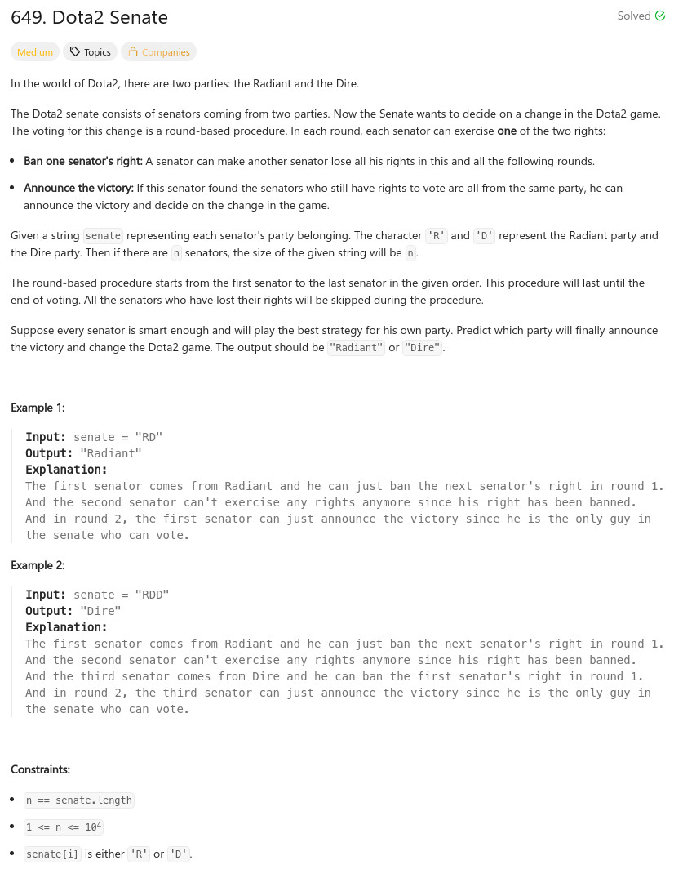

參考資訊：
https://www.cnblogs.com/grandyang/p/7439222.html
題目：

char* predictPartyVictory(char *senate)
{
int c0 = 0;
int c1 = 0;
int cnt_d = 0;
int cnt_r = 0;
int len = strlen(senate);
for (c0 = 0; c0 < len; c0++) {
if (senate[c0] == 'R') {
cnt_r += 1;
}
else {
cnt_d += 1;
}
}
while ((cnt_r > 0) && (cnt_d > 0)) {
for (c0 = 0; c0 < len; c0++) {
if (senate[c0] == 'R') {
for (c1 = c0 + 1; c1 < (c0 + len); c1++) {
if (senate[c1 % len] == 'D') {
senate[c1 % len] = 'B';
cnt_d -= 1;
break;
}
}
}
else if (senate[c0] == 'D') {
for (c1 = c0 + 1; c1 < (c0 + len); c1++) {
if (senate[c1 % len] == 'R') {
senate[c1 % len] = 'B';
cnt_r -= 1;
break;
}
}
}
}
}
return cnt_r ? "Radiant" : "Dire";
}